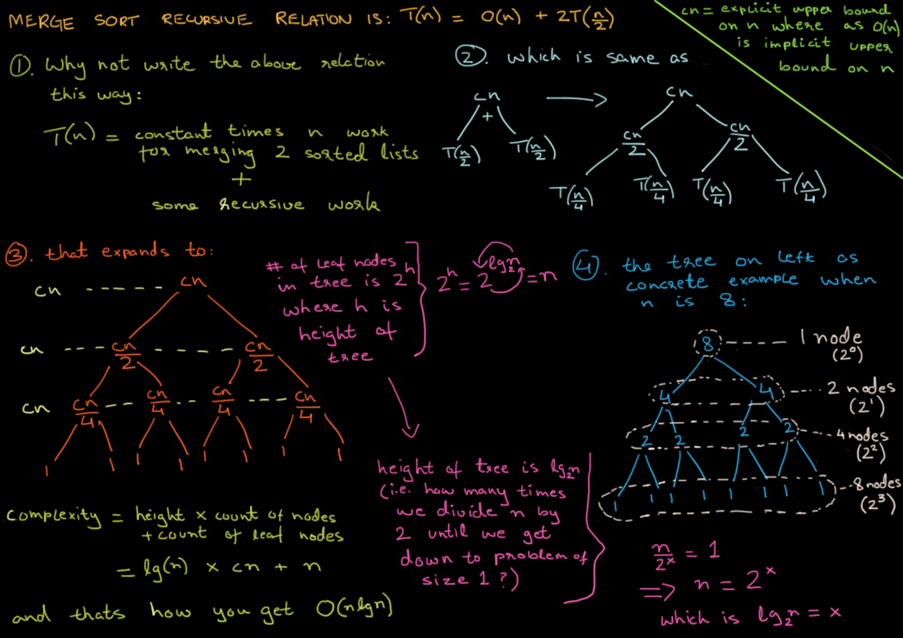

Jira - Organizar por tareas y cronogramas para Proyectos
Jira - Proyecto Scrum/Hospital
Es muy util para aprender, poner en practica y no olvidar - Eduard
Centro de Busqueda de Google Marketing, Desarrolladores y SEO
! Deberias visitar empresas y centros de desarrollo y programacion en Bogota
Time Complexity Merge Sort
"Hacerte preguntas y contestar las que tu mente te ofrece puede ser muy util para descubrir un camino hacia delante"
"No te compares con lo que la otra persona es hoy, comparate contigo mismo, toma distacia y calibra tus estrategias y busca ser hoy mejor que ayer y mañana mejor que hoy"
"Sal mas, hay afuera hay muchas personas por conocer, cosas por experimentar, interactua, y vive"
"Si tu estilo de vida llega a quitarte, tus relaciones con otros seres humanos, tu desarrollo personal, tu salud fisica y mental entonces es "
"Una buena salud mental, depende en gran parte en tu forma de responder a las cosas, preguntate ¿Situacion o pensamiento "X" es realmenta tan mala como parece?, ¿A caso no podria ser un reto o una oportunidad para mejorar y/o hacer lo correcto?"
"Tu vision de ti mismo, tu estilo de vida y tu felicidad depende de que tanto te ezfuerces por conseguir las cosas, las recompensas son unicamente para buenos comportamientos o acciones que te llevaron a tenerlas, de otra forma te estas recompensando por nada, con el tiempo tu cerebro se adapta, va disminuyendo la dopamina que libera por cada recompensa y incrementa cada vez mas a tu mono"
"Eres un ser sociable, encuentra el equilibrio entre la vida y el trabajo"
"Tu motivacion depende de tus niveles regulares de dopamina, cambia tus malos habito por buenos habitos y ve bajando tu necesidad de dopamina poco a poco, con recompensas justas"
"Eres el responsable de lo que suceda contigo, los cambios que veas en tu vida dependen en gran medida de cuanto ezfuerzo le hayas dedicado a crear estrategias y de cuanto ezfuerzo le hayas dedicado a ejecutar esas estrategias,al fin y al cabo, cuanto ezfuerzo le dedicas a algo es algo que tú controlas por completo"
"No usas ningun tipo de adjetivo (Ni positivo, que te hace creer que las cosas que te ocurren dependen unicamente del medio externo, ni negativos, que hacen que tu identidad se atrofie en un estado de cobardia o victimizacion)para describirte, es importante crearte un indentidad pero que esta dependa unicamente de tus acciones (que sean correctas o enmendar las que no lo son) y en como tratas a los demas, pon mas atencion a el lenguaje corportal y verbal de las personas"
"Cada ser humano tiene en su interior la bondad basica que es el instinto inato de querer hacer lo que se considera correcto, sin embargo tambien posee la capacidad de obrar el mal, bajo las condiciones correctas las personas podemos hacer verdaderos actos de valentia o por el contrario verdaderas atrocidades, alguien maduro psicologica y emocionalmente es capaz de entrenar su mente y gestionar sus emociones para aprovechar el tiempo que le queda, no dejando que el mal que vive dentro suyo dañe a otros, convivir eficazmente con los demas y buscando formas de mejorar su voluntad"
"Se genuino con tus principios, convicciones e intenciones, con tigo mismo y con los demas (en este ultimo caso, no te irrites y ten tacto)
Me gusta mucho una frase del libro el mito de la motivación: "Sé poco realista cuando te fijes una meta, y luego sé realista acerca de cómo lograrás esa meta." La rutina es importante, y poder crear una que se alinee con tus objetivos de largo plazo es muy importante. Empezando de a poco, ganando pequeñas batallas, viendo día a día pequeños progresos, es que lograremos la motivación y fuerza de voluntad para seguir adelante. Les recomiendo los libros Hábitos Atómicos, El mito de la motivación y Willpower. Saludos!
Kosmi - Entretenimento con Amigos
Toma notas con preguntas
Hacerte preguntas te permite establecer con mayor eficacia lo que quieres hacer, lo que deberias hacer y demas
Puede responder estas preguntas si quieres tener las cosas mas claras
1. Preguntas en BuJo
Become The HERO of Your LIFE! Stop Wasting Your Potential - Jordan Peterson Motivation
Jordan Peterson: Stop Playing With Yourself
Esta es una seccion